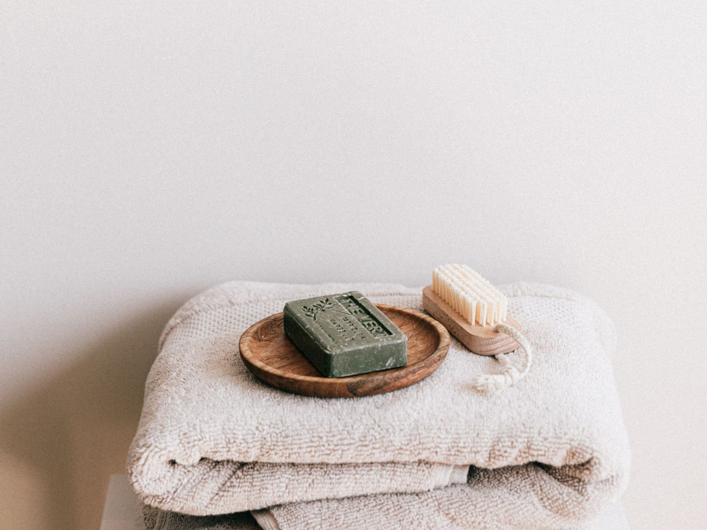

타오위안공항 1터미널 무료 샤워실, 수건은 챙겨야 할까?
출국 심사 뒤 4층 체험 구역부터 입국층 샤워실까지 — 찾아가는 길과 이용 시간, 챙길 것만 골라 정리했습니다.
게시
“새벽 비행기 타기 전에 공항에서 씻을 수 있을까요?” 타오위안공항 무료 샤워실은 1터미널 출국 구역과 입국 구역에 모두 있어요. 공항 공식 시설 안내와 2026년 2월 공항공사 발표, 대만 언론 보도를 바탕으로 위치와 이용법, 준비물을 정리해봤어요.
01 · 한눈에 비교하기
| 구분 | 출국 쪽 (4층 체험 구역) | 입국 쪽 (도착 구역) |
|---|---|---|
| 위치 | 출국 심사 뒤 면세 구역 4층, 환야(Plaza Premium) 라운지 옆 무료 ‘공항 체험 구역(機場體驗區)’ | 수하물 수취대 쪽 — 공식 안내상 2층 2곳·1층 1곳 |
| 이용 시간 | 샤워실 06:00~22:00, 체험 구역 좌석은 24시간 (2026년 10월 기준) | 24시간 (2026년 10월 기준) |
| 요금·예약 | 무료, 예약 없이 도착 순서대로 | 무료 |
| 이용 제한 | 1인 15분 | 세관을 지나 자동문 밖으로 나가면 다시 못 들어가요 |
| 잘 맞는 상황 | 새벽·장거리 비행 출발 전 | 장거리 비행 뒤 씻고 바로 이동할 때 |
공항 공식 시설 안내에는 1터미널 도착 구역 샤워실 3곳(24시간)이 나와 있고, 4층 체험 구역의 무료 샤워실은 2026년 2월 공항공사가 춘절 편의 서비스로 다시 소개했습니다. 2터미널에도 샤워실이 따로 있지만, 이 글은 1터미널 기준이에요.
02 · 출국 전 4층 무료 샤워실 찾아가는 법
출국 심사부터 끝내기 4층 샤워실은 출국 심사를 마친 면세 구역 안에 있어요. 체크인만 하고는 갈 수 없으니 보안 검색과 출국 심사를 먼저 끝내세요.
환야 라운지 옆 체험 구역 4층 환야(Plaza Premium) 라운지 옆 ‘機場體驗區’ 안에 있어요. 유료 라운지가 아니라 누구나 쓰는 무료 공간이라 카드나 탑승권 등급과 상관없습니다.
06:00~22:00, 1인 15분 좌석은 24시간이지만 샤워실은 06:00~22:00에만 열려요. 예약 없이 도착 순서대로 쓰고 1인 15분이에요(2026년 10월 기준). 문 앞 이용 안내문을 먼저 읽어 보세요.
기다리는 동안 쓸 수 있는 것 체험 구역에는 긴 테이블·소파 좌석, 무료 USB 충전, 수유실이 있어요. 샤워 순서를 기다리며 휴대폰을 충전해 두기 좋습니다.

03 · 샤워실 시설과 준비물
공식 안내 시설 남녀 샤워실이 나뉘어 있고 냉·온수 샤워가 되며, 테이블·의자·옷걸이 고리·거울이 있어요(공항 공식 안내).
수건은 꼭 챙기기 수건은 비치돼 있지 않아요. 작은 수건이나 잘 마르는 여행용 수건을 기내 가방에 넣어 두세요.
세면도구는 소용량으로 샴푸·바디워시가 있었다는 보도와 없었다는 후기가 엇갈려요. 여행용 세면도구를 챙기는 편이 안전하고, 출국 심사 뒤에 쓰는 것이라 액체는 100ml 이하 용기로 준비하세요.
드라이기 벽에 붙은 드라이기가 있다는 보도가 있어요. 머리숱이 많으면 말리는 시간까지 15분 안에 들어가도록 순서를 정해 두는 게 좋아요.
갈아입을 옷은 가방 맨 위에 위탁 수하물은 이미 부친 뒤라, 갈아입을 옷과 속옷은 기내 가방 맨 위에 따로 넣어 두면 시간이 줄어요.

04 · 입국 후 샤워실은 세관 전에
장거리 비행 뒤 바로 씻고 싶다면 입국 쪽 샤워실을 쓰면 돼요. 공식 안내상 1터미널 도착 구역 2층에 2곳, 1층에 1곳이 24시간 열려 있고, 수하물 수취대 근처에 있다고 보도됐습니다. 세관을 지나 자동문 밖으로 나가면 다시 들어올 수 없으니, 짐을 찾은 뒤 세관을 통과하기 전에 이용하세요.
“짐 찾고 세관 나가기 전에 씻으세요 — 자동문 밖으로 나가면 다시 못 들어옵니다.” — 입국 샤워실을 소개한 대만 언론 보도에서 빠지지 않는 당부예요.
새벽에 도착해 시내로 들어갈 계획이면 타오위안공항 새벽 도착 교통 가이드를, 마지막 날 숙소 없이 새벽 비행기를 탄다면 타이베이 마지막 날 새벽 비행기 정리를 함께 보세요. 공항 가기 전 든든하게 먹을 곳은 타이베이 맛집 지도와 타이베이 조식 맛집, 딩위안 또우장(鼎元豆漿)에서 고를 수 있어요.
지도에서 공항 가기 전 맛집도 확인해보세요
출국 전에 들를 타이베이 조식·식사 맛집을 미리 찜해 두면 마지막 날 동선이 편해져요.